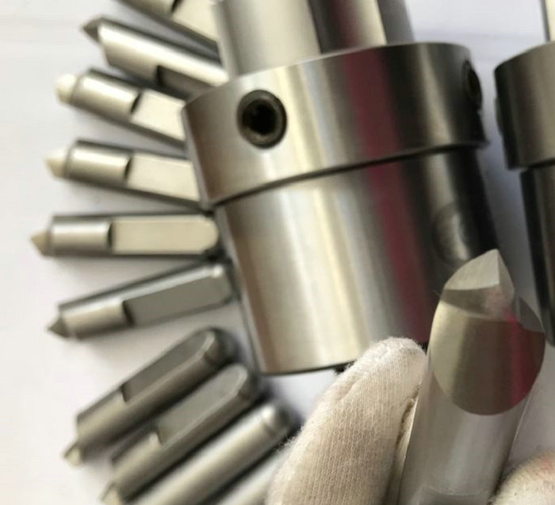
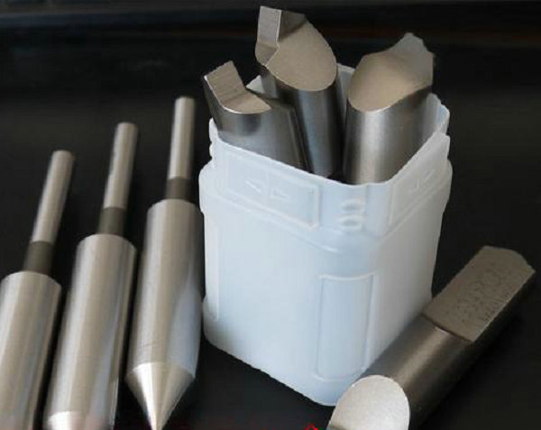
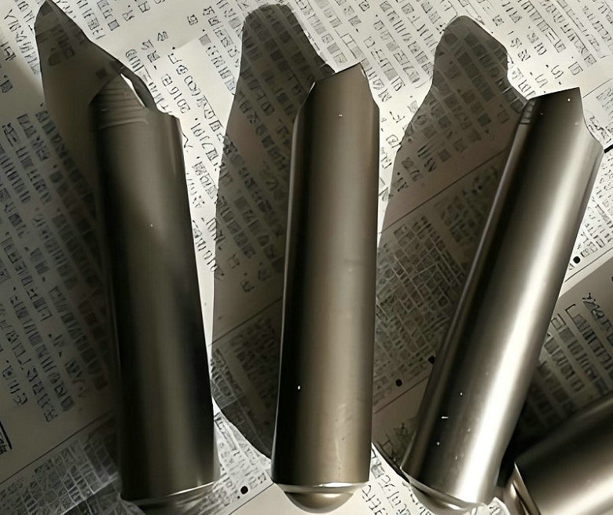

OEM Fixed drive pins, Standard face driver pins, 4pcs system with spherical end! USA supplier: RH standard face drivers and LH Fixed rounded-end drive pins.
Choose standard S7 fixed drive pins – custom‑made for your most demanding production lines. Contact us today with your drawing, sample, or driver model.


In face driving systems, the choice of drive pin determines not only how torque is transmitted, but also the final accuracy of every machined part. Standard drive pins – also known as fixed drive pins – represent the most traditional and widely used solution in high‑precision turning, grinding, and gear cutting. Unlike floating or offset pins, fixed drive pins do not compensate for end‑face irregularities. Instead, they rely on a rigid, non‑movable connection that delivers exceptional torsional stiffness and repeatable positioning. At our manufacturing facility, we specialize exclusively in these standard drive pins, built from S7 tool steel and custom‑engineered to your exact requirements.


A fixed drive pin is installed into the face driver body without any axial or radial compensation mechanism. Its position is absolute. The pin engages the workpiece end face through external hydraulic or pneumatic force, and once embedded, it remains stationary relative to the driver body. This rigidity eliminates micro‑movements during heavy cuts, ensuring that every pass produces identical results. Fixed pins are typically arranged in sets of three, four, five, or six – with four‑pin configurations being the most common for balanced torque distribution.
the comparison between Fixed Drive Pins and Floating (Offset) Drive Pins.
| Feature | Fixed Drive Pins | Floating / Offset Drive Pins | |||||||||
|---|---|---|---|---|---|---|---|---|---|---|---|
| Core Purpose | Precision & efficiency. High‑speed, high‑volume machining with extreme accuracy. | Adaptability & accommodation. Handling irregular, uneven, or complex end faces. | |||||||||
| Driving Force Source | External power (hydraulic/pneumatic). Forced engagement by an actuator. | Axial force / internal spring. Driven by center thrust or built‑in springs. | |||||||||
| End Face Compensation | None. Requires a flat, well‑prepared end face. | Yes. Automatically compensates for end face tilt, unevenness, or irregularities. | |||||||||
| Center Pin Type | Fixed center pin – ensures precise axial positioning. | Floating center pin – self‑aligns with the workpiece before pins engage. | |||||||||
| Ideal Workpiece End Face | Flat, pre‑machined surface. | Raw (as‑cut or forged) surface, saw‑cut face, or inclined face (up to 5–7°). | |||||||||
Standard drive pins work together with the center pin (also called the center tip). The center pin provides precise axial and radial location by engaging the workpiece’s center hole. It establishes the rotational axis. The fixed drive pins then transmit spindle torque to the workpiece. Because both components are rigid, the axial position of the workpiece is determined solely by the center pin – not by how deep the drive pins penetrate. This characteristic is critical for achieving consistent length tolerances in high‑volume production, such as automotive transmission shafts or electric motor rotors
- home
- products
- contact
- equipments
- offset driving parts
- half offset drive pins
- central driver parts
- standard/ Fixed driving pins
- Lowered drive parts
- clockwise driver pins
- counterclockwise driving parts
- full width drive pins
- Lasting driver parts
- chisel-edged driving pins
- floating drive parts
- power-operated driver pins
- hydraulic driving parts
- mechanical drive pins
- movable driver parts
- fixed driving pins
- carbide driver pins
- tool steel S7 driving parts
- changeable pins
- face drive pins